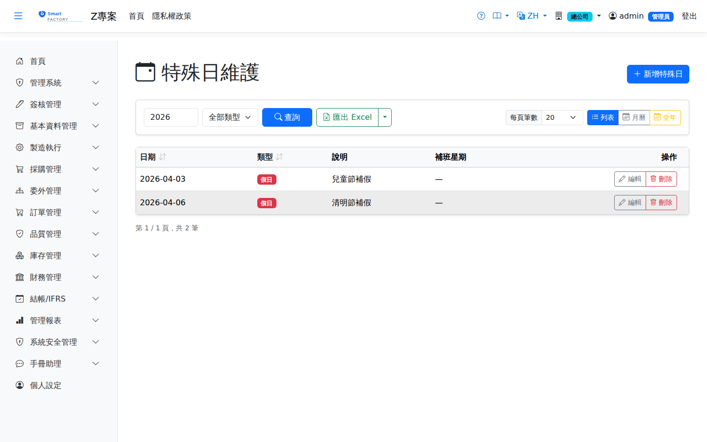

特殊日Special Day
路由：/BAS/SpecialDay | 假日、補班日與特殊排班設定Route: /BAS/SpecialDay | Holidays, compensatory workdays and special schedules
特殊日用於覆蓋班別群組的常規排班。排程引擎在計算工作日曆時，會以特殊日設定優先取代週間規則，確保假日不排產、補班日照常計算產能。Special days override the regular schedule of a shift group. When building the work calendar, the scheduling engine applies special days ahead of the weekly rules, so nothing is scheduled on holidays and compensatory workdays still contribute capacity.

特殊日畫面截圖（示意，實際欄位/資料依權限與查詢條件而異）Special day screenshot (illustrative; actual fields and data vary by permission and query criteria)
欄位說明Field reference
| 欄位名稱Field | 必填Required | 說明Guide |
|---|---|---|
| 日期Date | 必填Required | 特殊日的具體日期（例：2026-01-01）The date of the special day (e.g. 2026-01-01) |
| 日期類型Date Type | 必填Required | 假日（Holiday）/ 補班日（Compensatory）；詳見下方說明Holiday / Compensatory workday; see the notes below |
| 說明Guide | 備註（例：元旦、補上 12/28 假期）Note (e.g. New Year's Day, makeup for the 12/28 holiday) | |
| 補班對應星期Compensatory Weekday | 僅「補班日」需填，指定以哪一天的班別群組為準（1=週一 … 7=週日）Required for compensatory workdays only: which weekday's shift group applies (1 = Mon … 7 = Sun) |
日期類型說明Date types
假日（Holiday）Holiday：全日不排產，工作日曆該日可用分鐘 = 0。: nothing is scheduled all day; available minutes in the work calendar = 0.
補班日（Compensatory）Compensatory workday：原本休假日但需上班，依「補班對應星期」的班別計算可用時間。: a normal day off on which work takes place; available time is taken from the shift of the "Compensatory Weekday".
操作步驟Steps
新增假日Adding a holiday
1
進入「基本資料 > 特殊日」。Go to "Basic Data > Special Day".
2
點「新增」，選擇日期，日期類型選「假日」，填入說明（如「元旦」）。Click "Add", pick the date, set the date type to "Holiday" and enter a description (such as "New Year's Day").
3
點「儲存」。Click "Save".
新增補班日Adding a compensatory workday
1
點「新增」，選擇補班日期，日期類型選「補班日」。Click "Add", pick the makeup date and set the date type to "Compensatory".
2
在「補班對應星期」欄選擇以哪天的班別為準（例：週日補班，選「1」代表以週一班別計算工時）。In the "Compensatory Weekday" field choose which weekday's shift applies (for a Sunday makeup day, choose "1" to use the Monday hours).
3
填入說明後點「儲存」。Enter the description, then click "Save".
查看月曆視圖Viewing the calendar
清單上方提供月曆切換器，已設定的假日以紅底標示，補班日以綠底標示，方便整月確認。A calendar switch above the list shows holidays on a red background and compensatory workdays on green, making a whole month easy to check.
建議每年底集中建立次年度的假日清單，可依官方行政院人事總處公告的行事曆批次輸入，避免年初排程計算錯誤。Enter the next year's holidays in one batch at the end of each year, following the official government calendar, to avoid scheduling errors in January.
注意：Note:特殊日為廠級設定（PlantId 範圍），不同廠別（如不同生產地）可各自維護不同假日。 Special days are plant-scoped (PlantId), so plants in different locations can keep different holidays.